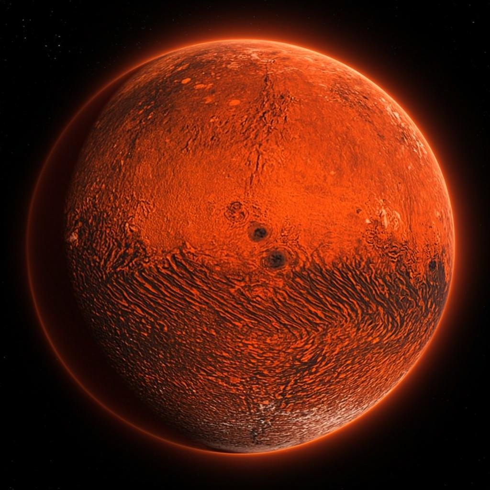
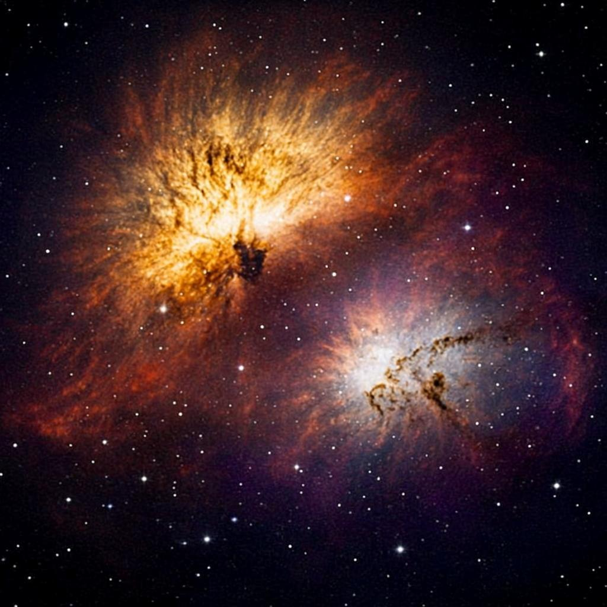

LIVE TELEMETRY
JWST deep field · CEERS-9332
z = 11.4 · 13.6 Gyr lookback
GALACTUS · FIELD GUIDE
A dark-mode observatory for the Solar System, stars, galaxies and the missions exploring them — built for curiosity, calibrated for wonder.
JWST deep field · CEERS-9332
z = 11.4 · 13.6 Gyr lookback01 / COSMIC ATLAS
Zoom from galaxies to planetary missions. Select a marker to open its field note.
A SHORT HISTORY OF LOOKING UP
Each date is another way we learned to read the sky.
02 / FIELD NOTES

Stars begin in clouds of gas and dust.
Next stop: the learning room.